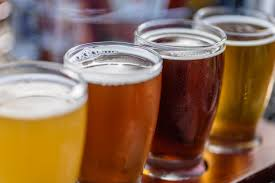

beer is my favorite type of liquor. there are very many kinds of beer all around the world.
In Korea, the most popular one is CASS. and furthermore, Miller, Hite, Max, Kloud... etc.I really enjoy all of them, but my best is CASS. To translate in Korea, it's literally 원픽 in convenience store.
